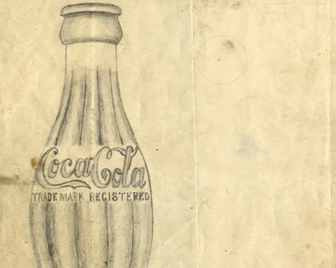

The Origin of Coca‑Cola On May 8, 1886, Dr. John Pemberton brought his perfected syrup to Jacobs' Pharmacy in downtown Atlanta where the first glass of Coca‑Cola was poured. Serving about nine drinks per day in its first year, Coca‑Cola was an exciting new drink in the beginning. See the story here of how it all bega
